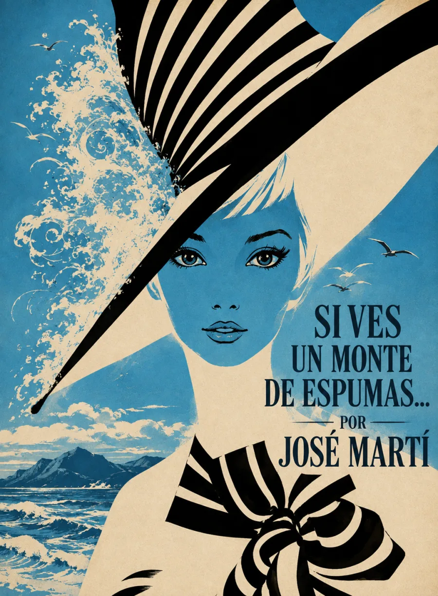

Audiolibros · Tercera Ola
Si ves un monte
de espumas
José Martí · Versos sencillos, V · 1891
La delicadeza también tiene filo.
Espuma, plumas, una flor en el acero.
El verso muestra sus formas
y revela la fuerza de su fragilidad.
La voz que se define a sí misma.
Volumen

Un retrato del verso
Martí describe su poesía mediante imágenes que no se dejan reducir a una sola cualidad. El verso es espuma y pluma, pero también puñal y acero; tiene color, brota como un surtidor y busca amparo como un ciervo herido. La belleza convive con la vulnerabilidad y la energía.
La flor no anula el filo: ambas imágenes pertenecen a la misma idea de poesía.
Las cuatro estrofas de cuatro versos construyen una declaración poética. La repetición de la primera persona da unidad a las transformaciones, y el cierre reúne brevedad, sinceridad y vigor. La sencillez formal no equivale a ingenuidad: concentra contrastes en una voz precisa.
Poema V de Versos sencillos, publicado en 1891. Fecha del libro: Library of Congress. Texto del poema. La imagen superior interpreta sus metáforas; no representa objetos históricos pertenecientes a Martí.
La lectura
Poema V · Completo
Una lectura continua. Claves de escucha: las repeticiones, los contrastes de materia y color, el ciervo herido y la firmeza del cierre. Grabación pendiente de incorporación.
Reseñas

Excelente